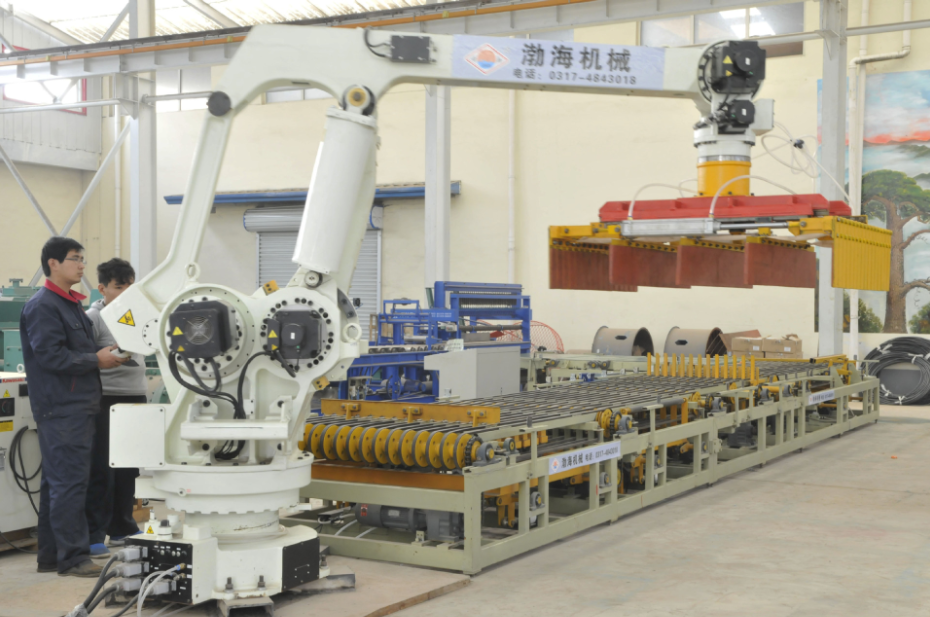

拓展与提高5-工业机器人如何与数控车床融合使用
随着我国装备制造业转型升级，在市场需求和技术进步双重作用下，近几年来工业机器人与数控机床集成应用发展很快，应用的形式不断扩展，对当前机床智能化潮流带来新的促动，对我国机床工具行业的转型升级也必将起到有益的推动作用。鉴于机器人研制以及与机床集成应用的发展现状，相关企业应如何建立有效的组织联络机制，以加强沟通与合作？两个行业融合发展该建立怎样的技术规范与标准，以充分做到资源共享与优势互补，并形成产业发展的合力？

图5-5 工业机器人与数控机床的融合使用
机器人产业正迎来黄金发展机遇期，如何推动工业机器人产业和机床工具产业的融合发展，如何做到工业机器人与数控机床的互为集成应用，已成为当前现代装备制造业产业升级的重要话题。机床制造过程中许多岗位主要依赖工人的体力和技能，生产效率低、劳动强度大、缺少熟练工人才，难以保障产品稳定性和一致性，促使机床行业越来越多的采用工业机器人及智能制造技术来改造传统工艺流程。以往，昂贵的进口机器人和生产线主要在汽车等少数行业使用，在机床行业等装备制造业领域应用比例偏低，很大程度上制约着国内机床行业自动化程度的提高。
一、两大产业现状
经过十一五、十二五两个五年计划，十年磨一剑，中国数控机床产业发展已进入中档规模产业化、高档小批量生产的阶段，产业整体水平基本具备国际竞争力。数控系统作为数控机床的控制大脑，国产数控系统厂家已经掌握了五轴联动、小线段插补、动态误差补偿等控制技术，也研制出高性能、大功率伺服驱动装置，自主研发促进技术创新与进步，也萌生了工业机器人产业的雏形，催长产业发展。
当前，数控系统研制企业、机床整机企业、自动化应用集成商，甚至房地产资本大鳄们，都在尝试进入机器人领域，掀起了一股机器人产业投资热。让人担虑的是，政策过度引导带来的圈地套惠、产业过度投资带来的产能过剩、缺乏创新驱动带来的低端同质化竞争等，都将把机器人产业带入无序发展。值得思考的是，什么样的企业最适合研制工业机器人？如何提升机器人产业的整体质量？总的来说，具有数控系统的基础，控制系统、伺服电机、伺服控制系统都能够批量生产的企业具有一定优势。日本FUNAC公司的产业推进路线，就是一个成功的典型案例，值得借鉴与参考。国内已有几家数控系统企业纷纷进入工业机器人产业，走在最先的广州数控，自2006年起规划研制工业机器人产业，已走过8个年头。借助自身控制器、伺服驱动、伺服电机产品生产积累的经验，已完成工业机器人系列化的全自主开发，产品覆盖了3~200kg，功能包括搬运、机床上下料、焊接、码垛、涂胶、打磨抛光、切割、喷涂、分拣、装配等。
随着用工成本上涨、技能人才缺少、高危环保、高强度作业等问题的凸显，工业机器人参与生产制造已被广泛认知和不断使用，成为社会关注的焦点。政府更是借此促进产业转型升级，企业用其开展技术改造，转变生产方式，提高作业效能。然而，中国的机器人保有量不大，民族品牌尚在培育中，综合竞争力有待提升。那么，机器人行业将以什么样的模式向前发展？笔者认为，现阶段更需要机器人整机企业、机器人关键部件供应商、机器人集成商产业链的协同发展。
二、机器人与数控机床融合的集成方式
在数控机床加工应用领域，本土机床上下料机器人与数控机床的融合应用已在先端发展之列。从行业应用层次来看，也发生较大改变：
（1）工作岛：单对单联动机加、单对多联机加工。
（2）柔性制造系统（FMS）：基于网络控制的柔性机加线，应用PLC控制平台，通过工业以太网总线方式，将多台机器人、多台数控机床及其辅助设备进行联网组线，按节拍进行有序自动生产。
（3）数字化车间：借助CAD\CAM\CAPPS\MES辅助生产工具、物流技术及传感技术，具备生产过程监控、在线故障实时反馈、加工工艺数据管理、刀具信息管理、设备维护数据管理、产品信息记录等功能，满足无人化加工需求，实现加工系统的生产计划、作业协调集成与优化运行。
（4）智慧工厂：借助智能化车间布局和ERP信息化管理系统，将最大限度地给传统生产方式带来革新。信息管理系统的数据库可以通过网关与各种外部的信息系统进行接口，将车间接入ERP系统，查询车间生产状态，实现企业资源的高效配置；借助其短信平台、邮件平台，可以向管理员进行设备故障、生产进度等信息的实时汇报。
三、工业机器人与数控机床融合发展的途径
机器人参与机床结构件加工制造以实现自动化，专用机床服务于机器人专用减速机的精密加工，提升加工工艺质量及批量生产效率等等，具有很大的融合发展空间。借助双方企业的战略合作，机器人企业可借助机床厂家的制造与工艺技术能力实现以下目标：
（1）面向机器人的本体铸件、减速机结构件，共同研究形成批量精密制造技术，提高机器人批量化生产能力和工艺水平，攻克可靠性、一致性技术，实现高效、稳定、精密的节拍生产。
（2）面向机器人工装、夹具，机加生产线的集成能力，借助各大机床厂的广大终端客户渠道资源，委托推广应用机器人。
（3）研发面向机床单机及生产线上下料和零部件搬运、铲刮、倒角、抛磨、焊接、喷涂（粉）等自动化、柔性化生产急需的工业机器人，机床企业与工业机器人企业共同研制，实现整机零部件的自动加工，推动机床生产制造技术水平提升。
（4）工业机器人机械本体的关键零部件，如转盘、大臂、箱体、支撑套、小臂、腕体等，尺寸精度和形位公差均要求较高，对机械加工设备、工装夹具、量检具等都有很高的要求；机器人减速器的摆线齿壳、行星针轮、偏心轴及行星架等关键零件的结构优化和加工，目前国内的加工设备、装配工艺、精度检测等还难以达到。但立足使用国产数控机床及工具设备完成相关加工，则有助于提高我国高端精密机械零部件设计及加工水平，促进国产数控装置与国产数控机床的应用和发展。
机床上下料机器人实现机加柔性生产线将是便捷有效的推广方式。国内数控机床保有量约200万台，机器人企业首推应用机床上下料柔性机加生产线，将会有很大的市场需求，并且也有利于助推机床制造、机器人等机械零部件走向自动化、数字化、网络化的生产方式，可实现过程智能控制、信息化管理，能提高生产效率与产品质量，提高工艺管理水平，直至推动装备制造业的整体水平提升。例如，广州数控与大连机床、宝鸡机床等机床厂家形成战略合作关系，共同研发机器人专用加工机床、加工工艺技术应用、机器人机加自动柔性生产应用等项目，促进了双方互相融入各自产业应用。
国产机器人和机床工具行业与国际先进水平存在差距，尤其作为新兴产业的工业机器人，起步晚于国内机床产业，无论制造工艺水平、控制系统，还是集成应用经验；无论技术标准成熟度，还是专业人才拥有程度，都制约当前的发展速度，尚需在摸索中寻求进步。但我们相信，两者的深度融合，对于提高中国装备制造业的综合竞争力具有重大意义。